Para negocios
Lo hago yo por ti
Branding, rebranding, contenido y sistemas con IA para que tu marca se vea como se siente, sin que tengas que meterte a aprenderlo todo.
Cotiza tu proyecto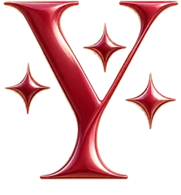
Claudia González · Creative Director · Chicago
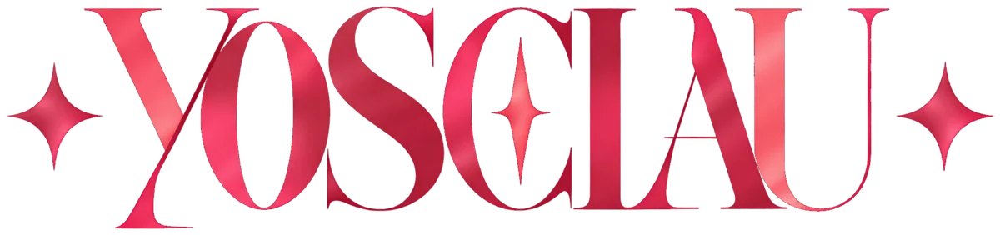
Las ideas también tienen estilo
Dirección creativa y diseño visual con IA
Te ayudo a darle a tu marca identidad, personajes y mundos visuales con historia. Diseño, storytelling y herramientas de IA, siempre con dirección propia.
Visual storyteller · creative direction & AI visual design for brands.
@yosclau en Instagram


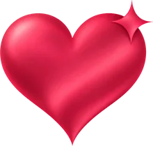
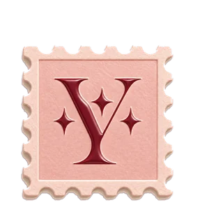
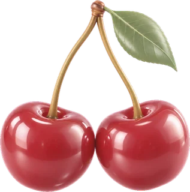
Hola, soy Claudia
Soy mexicana, vivo en Chicago y soy creativa visual. Te ayudo a que tu marca tenga un mundo propio: tomo tu idea y, con dirección creativa y diseño con IA, le construyo su estética, sus personajes y su historia.
Mezclo diseño, arte, storytelling, fotografía y tecnología para crear piezas que se sientan tuyas y que tu cliente reconozca a primera vista.
Estudio diseño y también soy creadora de contenido. Mi marca personal, @yosclau, es mi laboratorio: ahí pruebo, aprendo y comparto lo que hago.
Tengo fe en la gente. Y tengo fe en que podemos usar la IA para construir algo mejor, no algo peor. Depende de nosotros, y yo elijo creer.
“Mi identidad no vive en una sola estética; vive en cómo combino color, naturaleza, narrativa, objetos y contraste.”
keep moving forward Experimentar, equivocarme y seguir.

Mi proceso creativo
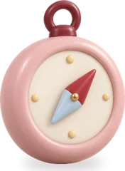
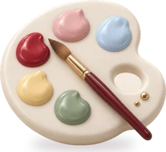
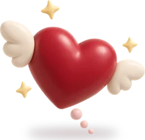
Servicios
Para marcas, emprendedores y creadores que quieren verse como se sienten.
Logos, elementos gráficos, paletas y tipografía para que tu marca se reconozca a primera vista.
Tu logo en movimiento: intros, cierres de video y detalles que le dan vida en redes.
Imágenes, campañas y videos creados con IA y dirigidos con criterio, listos para redes y anuncios.
Mascotas, personajes y universos visuales para que tu marca tenga historia y personalidad propia.
Sitios web con tu identidad visual: claros, bonitos y pensados para verse bien en el celular.
Del concepto a la pieza final: idea, moodboard, estética y guía visual para que toda la campaña hable igual.
Art direction · Creative concepting · Visual storytelling · Branding · AI-assisted creative development · Creative content
Cómo trabajo contigo
Para negocios
Branding, rebranding, contenido y sistemas con IA para que tu marca se vea como se siente, sin que tengas que meterte a aprenderlo todo.
Cotiza tu proyectoPara creativos y freelancers
Te guío para armar tu marca personal y perderle el miedo a la IA. Te enseño lo que a mí me funciona, paso a paso y sin términos raros.
Agenda tu sesiónMi norte
“No se trata solo de diseñar cosas bonitas. Se trata de convertir ideas en conceptos, sistemas y mundos con una voz propia.”
crear no empieza en una herramienta, empieza en una posibilidad
Proyectos destacados
En cada proyecto separo qué decidí yo y qué generó la herramienta. La IA genera opciones; la dirección es mía.
01
Cliente · Branding y anuncios
desliza las piezas →


02
Video IA · Proyecto conceptual
03
Personajes · Serie personal
desliza la serie →


04
Personajes · Avatares 3D
05
Diseño gráfico · Experimento
Inspirado en “50 design styles every designer should know for better prompting” (UX Planet). Cada póster de esta serie es mío.
Pared de mundos
Pasa el mouse sobre los videos para verlos en movimiento.Desliza cada tira con el dedo; los videos se mueven solos. Toca cualquier pieza para ver la idea, qué hice yo y qué hizo la IA.
¿Te imaginas tu marca en uno de estos mundos?
Misma esencia, otro mundo
Mueve el mouse sobre las fotos o haz clic para cambiar cuál va al frente ✦Toca las fotos para cambiar cuál va al frente ✦
Pruébalo tú
Elige un estilo y te enseño una pieza mía hecha así. Es la misma dirección que le doy a tu marca, en el mundo que tú quieras.
Todas son piezas reales de mi catálogo: retratos, avatares 3D y más de 100 pósters de estilos.
¿Prefieres escribir? Mándame una carta y lo platicamos.
Constantes
Rara vez pienso en una pieza aislada. Pienso en series, sistemas y universos.
Burgundy, rojo cereza, azul cielo, rosa, verde, amarillo y naranja. Incluso lo neutro necesita pulso.
Flores, animales, cielo, luna, sol y paisajes: lo vivo como fuente de color y ternura.
Golden hour, brillos, luz etérea, glow. La luz decide cómo se siente una idea.
No solo quiero algo para mirar; quiero que exista algo que contar.
Diseño, arte, storytelling, objetos, espacios, fotografía, tecnología y experimentación.
Temas que vuelven: curiosidad · transformación · identidad · aprendizaje · humor · emoción · imaginación
Proceso
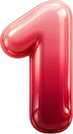
Una imagen, una emoción, una conversación, algo que aprendí.
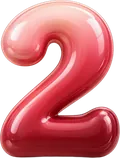
Referencias, colores, historias, formatos y posibilidades. Moodboards con intención.
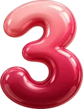
Uso herramientas de diseño y de IA para explorar rápido muchas versiones.
Elijo, edito y conecto las piezas en un sistema coherente. Ese criterio es el trabajo.
Mi caja de herramientas: Adobe Creative Cloud · Canva Pro · Higgsfield · ChatGPT · Claude
El ambiente
Así empieza cada proyecto: referencias, notas, colores y objetos que me inspiran. Arrastra lo que quierasMantén presionada una pieza y muévela para armar tu propio moodboard.
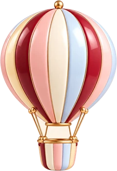
Estudio
Además de mi trabajo propio, formo parte de un estudio creativo con amigos que se complementan. Cada quien aporta lo suyo y juntos llevamos un proyecto de la idea a los resultados.
Dirección creativa · diseño con IA
El mundo visual: concepto, estética, personajes e historia.
Estrategia · ads · marketing
Estrategia de contenido, paid ads, marketing y planeación.
Ver su sitioDiseño gráfico · marca · papelería
Identidad de marca, papelería, carteles y piezas para redes.
Ver su sitioestrategia, diseño y contenido, en un mismo equipo ✦
Reseñas
muy pronto, reseñas reales ✦
¿Trabajamos juntos?
Cuéntame cómo te fue
Tu reseña puede ser la primera de esta pared.
Escribir mi reseñaTu nombre aquíTu marca · tu proyecto
Aquí va una reseña. Así se va a ver cuando un cliente me cuente cómo fue crear su mundo conmigo.
Tu reseña aquíPronto
Este espacio está esperando la historia de la próxima marca con la que trabaje.
Aquí va una reseñaPronto
Las palabras de mis clientes, tal cual me las compartan.
Redes · tips · tutoriales
La IA no tiene que darte miedo ni dolor de cabeza. En mis redes comparto tips, tutoriales y mi opinión sin filtro sobre IA, diseño y creatividad, explicado como amiga. Lo que a mí me está funcionando, te lo comparto para que a ti también te funcione.
Así se ve mi mundo en redes ✦ Haz clic en el teléfonoToca el teléfono: abre un post, dale doble tap para el corazón o mira una historia destacada.
Contacto · Let’s work together
Identidad visual, contenido con IA, personajes, websites, una campaña completa o una sesión 1:1 para tu marca personal. Escríbeme y lo platicamos.
Yo te tengo fe